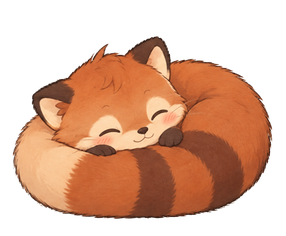

Eye break (20-20-20)
Every 20 min of screen time, look at something 20 ft (6 m) away for 20 s.
The cycle
Being idle 5+ min, locking the screen or sleeping counts as a break and restarts the 20 min. A break that comes due while you're idle waits until you're back.
1 · Warning, 10 s before

A small pill at the top centre counts down, and the pet nudges in its corner. Gives you time to finish a sentence. It never takes keyboard focus.
2 · The black screen: three styles
A · Minimal. Pure black, countdown ring only. Nothing to read.

B · With Rallo chosen The pet sits calmly, with one short tip and a dim countdown. Friendlier, and still dark.
C · Strict. No buttons. Esc does nothing until the 20 s are up. A setting, not the default.
3 · Multiple displays, and after
Every display goes black, including Spaces with full-screen apps. Only the main display shows the countdown.
The screen fades back over about 1 s. A small toast confirms the break, then goes away.
4 · Menu bar and Settings
A new “Breaks” tab in Settings, which opens from the menu bar's Settings… item.